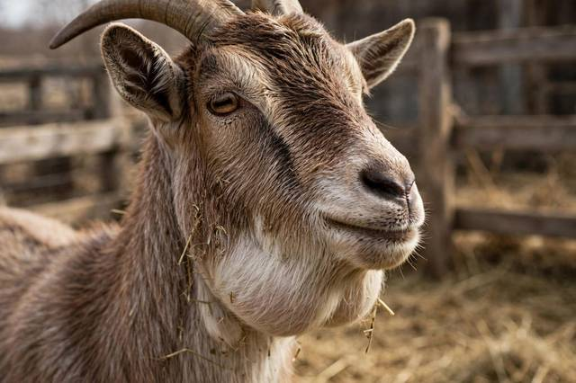
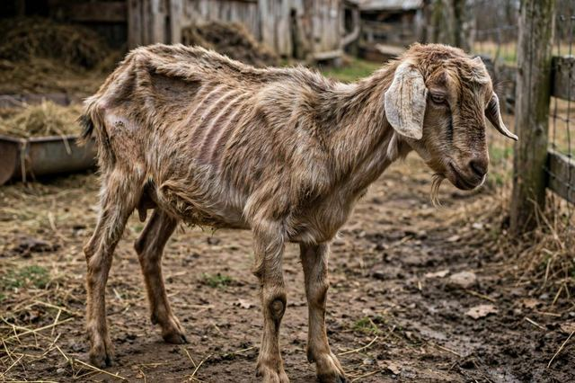

Johne’s disease (paratuberculosis) is a chronic, slowly progressive disease of goats, sheep and cattle. Infected animals waste away over months, and there is no cure — control depends on testing and culling.
In Pakistan, Johne’s disease is known as دائمی اسہال and is under-recognised in goat herds, although it is present in the country. It occurs worldwide and is an important cause of chronic wasting in adult small ruminants.
On this page: the cause, animals affected, clinical signs, diagnosis, treatment principles and prevention.
Cause
Johne’s disease is caused by Mycobacterium avium subspecies paratuberculosis (MAP). Animals are usually infected as kids, by swallowing the bacteria in milk or feed and water contaminated with the faeces of infected adults. The disease then develops slowly over months to years.
Animals Affected
Goats, sheep, cattle and deer are affected. Signs usually appear in adult animals over two years old, even though infection happened when they were young.
Clinical Signs
1
Progressive weight loss despite a normal appetite(Wasting away while still eating)
2
Chronic intermittent diarrhoea(On-and-off diarrhoea, less prominent in goats than in cattle)
3
Reduced milk production(Drop in milk production)
4
Swelling under the jaw (bottle jaw) in late stages(Soft swelling under the jaw)
5
Gradual decline over months, ending in death(Slow decline over months)
Progressive weight lossChronic diarrhoeaReduced milk production

Bottle jaw

Gradual decline
Diagnosis
Diagnosis is difficult in the early stages. Blood tests (ELISA) and faecal tests (culture or PCR) are used, but a single negative test does not prove an animal is free of infection. Herd-level testing, repeated over time, is the reliable way to find infected animals.
Treatment
There is no effective treatment for Johne’s disease. Infected animals are usually culled to protect the rest of the herd.
No specific medicine: There is no effective treatment for Johne's disease. Infected animals are usually culled to protect the rest of the herd.
⚠ Important Tips:
There is no effective treatment — infected animals are usually culled to protect the herd.
Test new animals before adding them to the flock.
Raise kids separately from adult faeces, with clean kidding pens, water and feed.
Keep a long-term herd control plan with veterinary guidance.
Medicines — only as prescribed by a veterinarianInjection — vet-administered only
Prevention
Buy animals only from herds known to be free of Johne’s disease
Test new animals before adding them to the flock
Raise kids separately from adult faeces — clean kidding pens, clean water and feed
Cull test-positive animals promptly
Keep a long-term herd control plan with veterinary guidance
Vaccination is used in some countries but does not prevent infection and can interfere with tuberculosis testing
Key Takeaway
Johne’s disease is a herd problem, not an individual one. Prevention through clean kidding, testing and culling is the only effective approach.
Keep herd health records, consult a qualified veterinarian and follow the animal-health authority's current guidance for your region.
Frequently Asked Questions
What are the symptoms of Johne's disease in goats?
Progressive weight loss despite a normal appetite, chronic intermittent diarrhoea, reduced milk production and, in late stages, swelling under the jaw (bottle jaw). Signs usually appear in adult animals over two years old.
What causes Johne's disease in goats?
Johne's disease is caused by Mycobacterium avium subspecies paratuberculosis (MAP). Animals are usually infected as kids, by swallowing the bacteria in milk or in feed and water contaminated with the faeces of infected adults.
How is Johne's disease in goats diagnosed?
Diagnosis is difficult in the early stages. Blood tests (ELISA) and faecal tests (culture or PCR) are used, but a single negative test does not prove an animal is free of infection. Herd-level testing, repeated over time, is the reliable way to find infected animals.
Can Johne's disease in goats be cured?
No. There is no effective treatment for Johne's disease. Infected animals are usually culled to protect the rest of the herd.
How can Johne's disease in goats be prevented?
Buy animals only from herds known to be free of Johne's disease, test new animals, and raise kids separately from adult faeces with clean kidding pens, water and feed. Cull test-positive animals promptly and keep a long-term herd control plan with veterinary guidance.
Why is my goat losing weight?
Progressive weight loss despite a normal appetite is typical of Johne's disease, along with chronic intermittent diarrhoea and reduced milk production. Signs usually appear in adult animals over two years old.
Is Johne's disease in goats curable?
No, there is no effective treatment for Johne's disease. Infected animals are usually culled to protect the rest of the herd, so prevention through testing and clean management is the only effective approach.
بکری کا وزن کیوں کم ہو رہا ہے؟
دائمی اسہال میں جانور بھوک کے باوجود مہینوں میں دبلا ہوتا جاتا ہے اور دودھ کم ہو جاتا ہے۔ اس کا کوئی علاج نہیں، متاثرہ جانور کو ریوڑ سے الگ کرنا ہی بچاؤ ہے۔ صاف ستھری جگہ اور ٹیسٹ ضروری ہیں۔